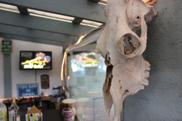
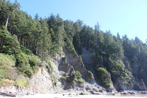
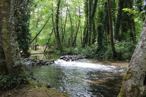
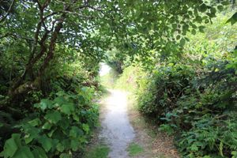

About Oregon
Oregon gained statehood in 1859, and since then has become known for the natural beauty the state has to offer. From beaches and forests to mountains and deserts, the state offers a wide variety of terrain, and has become a destination for the discerning tourist.
Skull Man

As the end of the Oregon Trail, the state has a rich history, fraught with stories of the hardship that the original settlers endured in order to reach their new homes.
The relics of these travelers can be found throughout the state, from a full-fledged museum to the bleached bones of the animals that didn't survive the trip.
View full image
Short Sands

The state has a long coastline, with pristine stretches of beaches, often buttressed by beautiful cliffsides as seen here, at Short Sands Beach in Tillamook County.
View full image
Overlook

The mountains throughout the state, from the Cascade Mountains to the Coastal Ranges, offer a range of activities, from skiing to hiking. Views such as the one shown here can be achieved after only a short hike, and indeed, many roads through the mountains offer overlook points to further demonstrate the natural beauty of the state.
View full image
Creek

The simple beauty of nature can be found throughout the state, not just on the mountains or the coast. Take, for example, this tranquil creek, located in a park in Molalla. Publicly-accessible campsites sit along the side of the creek, and the soft bubbling of water can turn what some would call a pedestrian vacation into a relaxing paradise.
View full image
Path

Oregon offers a nearly uncountable number of beautiful vacation spots, with hidden gems located through the breadth of the state. All that it takes to enjoy the endless wonder available is the ability to look for it.
View full image